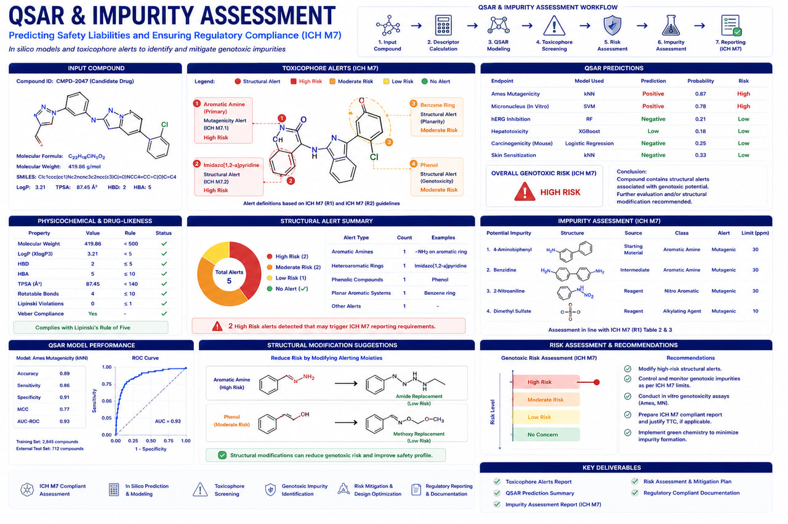

QSAR Toxicology & ICH M7 Impurity Assessment
Global Regulatory Toxicology Solutions for Pharmaceutical, Biotechnology & API Manufacturers

RASA Life Science Informatics provides comprehensive QSAR (Quantitative Structure–Activity Relationship) modeling, computational toxicology, impurity qualification, and ICH M7-compliant mutagenic risk assessment services for pharmaceutical companies, biotechnology organizations, API manufacturers, CDMOs, CROs, and regulatory affairs teams worldwide.
Our scientific experts combine computational toxicology, cheminformatics, regulatory science, and AI-driven predictive modeling to support impurity qualification, genotoxic impurity assessment, nitrosamine risk evaluation, extractables and leachables studies, and regulatory submissions across global markets.
ICH M7 Mutagenic Impurity Assessment
A structured computational toxicology workflow to identify, evaluate, and classify mutagenic impurities in drug substances.
Structural Alert Identification
Advanced screening of chemical structures to identify molecular alerts associated with DNA reactivity.
Dual QSAR Assessment
Parallel evaluation using complementary expert rule-based and machine-learning statistical models.
Weight-of-Evidence & Expert Review
Rigorous scientific analysis to resolve conflicting predictions and finalize toxicological safety conclusions.
Impurity Classification (Class 1–5)
Categorization of impurities according to the established ICH M7 toxicity classes.
TTC-Based Risk Assessment
Determining Threshold of Toxicological Concern (TTC) exposure levels and acceptable daily intake limits.
Control Strategy & Support
Formulating audit-ready regulatory reports and mitigation strategies for submission packages.
ICH M7 Impurity Classification
A structured grouping of impurities to determine appropriate threshold limits for toxicological control.
Class 1
Known mutagenic carcinogens.
Class 2
Known mutagens with unknown carcinogenicity.
Class 3
Alerting structures structurally unrelated to the API.
Class 4
Alerting structures with evidence of non-mutagenicity.
Class 5
No structural alerts or sufficient evidence of safety.
QSAR Toxicology Endpoints Evaluated
Key endpoints assessed through our computational pipelines to establish chemical and drug safety profiles.
Genotoxicity & Mutagenicity
- Ames Mutagenicity Alert
- In Vitro Genotoxicity
- In Vivo Genotoxicity
Systemic & Organ Toxicity
- Hepatotoxicity Assessment
- Organ-Specific Toxicity
- Endocrine Disruption Screening
Developmental & Skin
- Developmental Toxicity
- Reproductive Toxicity
- Skin Sensitization
Environmental & Other
- Carcinogenicity Potential
- Ecotoxicity Screening
- Aquatic & Soil Toxicity
Dual QSAR Assessment Strategy
Our dual-methodology framework utilizes parallel prediction models to increase accuracy and meet regulatory requirements.
Rule-Based Modeling
Expert knowledge-based systems (e.g., Derek Nexus, Toxtree) that scan chemical structures to identify molecular alerts associated with specific toxicological reactivities and endpoints.
Statistical-Based Modeling
Machine learning algorithms (e.g., Leadscope, Sarah Nexus) trained on large, standardized datasets that predict toxicological outcomes by quantifying structural similarities.
Supported Toxicology Platforms
Our workflows integrate industry-leading computational platforms and algorithms to deliver robust, compliant assessments.
Regulatory QSAR
Commercial QSAR
AI & Frameworks
Computational Risk & Impurity Assessments
Parallel expert workflows for identifying, quantifying, and mitigating toxicological risks in drug substances and packaging systems.
Nitrosamine Risk Assessment
Scope of Evaluation
- Nitrosamine Impurities & NDSRIs
- Process-Generated Nitrosamines
- Degradation-Related Nitrosamines
Deliverables Include
- Molecular Structure Assessment
- Mutagenicity & Potency Categorization
- Acceptable Daily Intake (AI) Calculation
- Regulatory Justification Reports
Extractables & Leachables
Materials Supported
- Packaging Materials & Container Closures
- Single-Use Manufacturing Systems
- Process Equipment Components
Assessment Parameters
- Chemical Identification Review
- TTC (Threshold of Toxicological Concern)
- PDE (Permitted Daily Exposure) Derivation
- Safety Margin & Regulatory Risk Reporting
Regulatory Frameworks We Support
Our analyses are designed to meet or exceed toxicological guidelines established by major international regulatory agencies.
Regulatory Documentation Support
Audit-ready documentation prepared in standard formats to support global regulatory filings.
Pharmaceutical Submissions
Global Regulatory Agencies
Deliverables
ICH M7 Reports
Toxicological Assessment Reports
Regulatory Submission Packages
Industries We Serve
We deliver customized computational toxicology solutions and regulatory packages to a wide range of global sectors.
Pharmaceutical Companies
Comprehensive impurity qualification, nitrosamine risk assessments, and compliance reports to support global filings.
API Manufacturers
Rapid process impurity screening, structural alert analysis, and mutagenic risk evaluation profiles.
Biotechnology Organizations
Computational toxicity profiles for early-stage screening of novel molecules and therapeutic candidates.
CROs & CDMOs
Independent, high-throughput computational toxicology reviews to augment external research services.
Medical Device & Packaging
Extractables and leachables (E&L) evaluations, container closure analyses, and material safety documentation.
Chemical & Specialty Materials
In silico hazard profiling, ecotoxicity screenings, and occupational safety endpoint predictions.
Why Choose RASA for QSAR & ICH M7 Assessment?
Regulatory Expertise
Deep understanding of ICH M7, FDA, EMA, and OECD toxicology frameworks.
Global Compliance
Support for submissions across North America, Europe, Asia-Pacific, and emerging markets.
Scientific Excellence
Integrated computational toxicology, cheminformatics, and regulatory science expertise.
AI-Powered Toxicology
Advanced predictive models supporting faster, more accurate toxicological evaluation.
Confidential & Secure
Strict confidentiality and secure handling of proprietary chemical structures and data.
Frequently Asked Questions
Ready to partner with a trusted bioinformatics company in India?
Get in touch with our team in Pune, India to discuss sample sizes, platform details, and custom bioinformatics pipeline configurations for your research program.
Start a Project